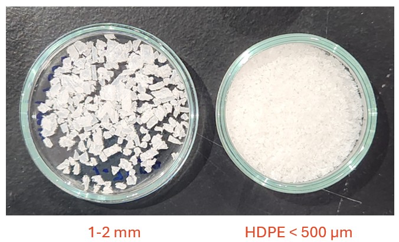
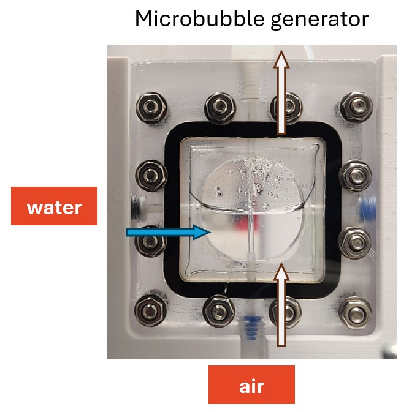
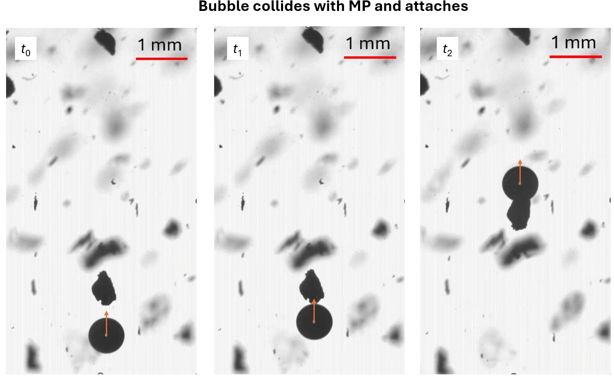

Microbubble-Assisted Capture and Transport of Microplastics
Bubble flotation offers a promising route for separating microplastics from water, but its effectiveness depends on several linked events. A bubble must first encounter a particle, the liquid film between them must drain, the particle must attach to the interface, and the resulting bubble-particle assembly must remain stable as it rises. This project investigated these mechanisms directly through controlled bubble generation and high-speed optical imaging.
I designed the microbubble-generation platform used in the study and supervised Daniel Wang, a Sydney Nano Denison Scholar who conducted the experiments, analysed the video sequences, and prepared the technical project reports. The research was undertaken in the Neto Research Group with academic supervision from Professor Chiara Neto and support from the University of Sydney Nano Institute.
Engineering Challenge
Reliable flotation experiments require bubbles and particles of comparable size, controlled bubble generation, stable particle suspension, and sufficient optical resolution to observe individual collision and attachment events. Large millimetre-scale bubbles showed limited interaction with target microplastics, while low-density polyethylene fragments floated independently without bubble assistance. I therefore designed a submillimetre bubble-generation platform, and the experimental program shifted to near-neutrally buoyant polystyrene particles sorted into controlled size fractions.
Developing Suitable Model Microplastics
Initial trials evaluated high-density polyethylene (HDPE) particles prepared from waste laboratory plastic. The material was cooled using liquid nitrogen, mechanically ground, and imaged to characterize particle size and shape. However, because HDPE is less dense than water, larger fragments rapidly floated to the surface without bubble assistance, making it difficult to distinguish bubble-mediated capture from natural particle buoyancy.
Polystyrene (PS) was subsequently selected as a more suitable model material. Its density is very close to that of water, allowing particles to remain suspended long enough for individual bubble-particle interactions to be resolved. The ground polystyrene was separated using 150 µm and 500 µm sieves and characterized by optical microscopy, revealing broad distributions in size, aspect ratio, and morphology, including globular and filament-like fragments.
From Millimetre Bubbles to Submillimetre Capture
Initial experiments utilized bubbles approximately 2 mm in diameter. Although these bubbles could be tracked reproducibly, they were substantially larger than the target particles and exhibited limited attachment efficiency. The platform was therefore redesigned to generate smaller bubbles whose diameters were closer to the microplastic size range.
The final microbubble arrangement introduced controlled air and water streams into a purpose-designed generator before releasing the bubbles into a liquid column containing suspended polystyrene particles. High-speed imaging at up to 2,400 frames per second captured individual collisions, attachment events, and the subsequent motion of loaded bubbles.
The experiments confirmed direct particle pickup by rising bubbles. In one recorded event, a bubble approximately 0.70 mm in diameter rose initially at about 80 mm/s and travelled at approximately 70 mm/s after particle attachment. A second event showed a smaller velocity reduction, from approximately 72.3 to 69.9 mm/s. These preliminary observations indicate that attached particle cargo can measurably modify bubble dynamics, establishing a platform for systematic studies on bubble size, particle concentration, water chemistry, and interfacial condition.
Measurement Principle
High-speed optical imaging resolves individual bubble-particle encounters and tracks the bubble before, during, and after attachment. Bubble diameter, trajectory, and rise velocity are measured together with particle size and morphology. These observations distinguish collision, attachment, retention, and transport mechanisms while assessing how particle loading and water contamination modify bubble interfacial mobility and hydrodynamic drag.
Key Design Features
- Purpose-designed microbubble generator: Introduces controlled air/water streams for submillimetre bubble formation.
- Submillimetre bubble range: Produces bubbles approaching particle dimensions for improved interaction.
- PEEK microfluidic tubing: 64 µm internal diameter capillary tip designed to refine bubble detachment.
- Controlled particle fractions: Ground polystyrene sieved into 150 µm and 500 µm size fractions.
- Waste-plastic evaluation: Assessed HDPE buoyancy limits to isolate bubble-mediated transport.
- Optical particle characterisation: Microscopy quantifies circularity, aspect ratio, and shape.
- High-speed imaging: 800 to 2,400 fps recording captures dynamic film drainage and capture.
- Trajectory & velocity analysis: Time-resolved tracking of unloaded versus loaded bubble motion.
- Single-interaction observation: Mechanistic study of individual capture events over bulk removal.
Experimental Sequence & Preliminary Findings
Particle Preparation & Characterisation
Polystyrene particles were mechanically ground, separated into controlled size fractions using 150 µm and 500 µm sieves, and characterised by optical microscopy prior to flotation testing.

Microbubble Generator Design
Controlled air and water streams enter the purpose-designed generator, releasing submillimetre bubbles into the liquid column containing suspended microplastic particles.

Micro-bubble collision with Micro-palstic collision and attachment dynamics

- High-speed imaging establishes the baseline rise trajectory, terminal velocity, and shape oscillations of clean bubbles before microplastic encounters.
- Sequential high-speed frames record a rising submillimetre bubble colliding with, capturing, and retaining a suspended polystyrene microplastic particle.
- The microplastic particle remains securely attached to the bubble interface during upward transport, demonstrating the essential stages required for effective flotation separation.
- Stable upward transport of a loaded bubble carrying a polystyrene fragment through the observation cell.
Student Research Supervision & Acknowledgements
The experimental work and image data analysis were conducted by Daniel Wang, Sydney Nano Denison Scholar, under my day-to-day research supervision. I designed the microbubble-generation platform and guided the experimental strategy, image processing workflows, physical interpretation, and reporting. The project was conducted within the Neto Research Group under academic supervision from Professor Chiara Neto, with financial and infrastructure support from the University of Sydney Nano Institute.
Publications
Research reports and experimental methods from this study contribute to ongoing investigations on interfacial fluid mechanics and microplastic separation technologies.